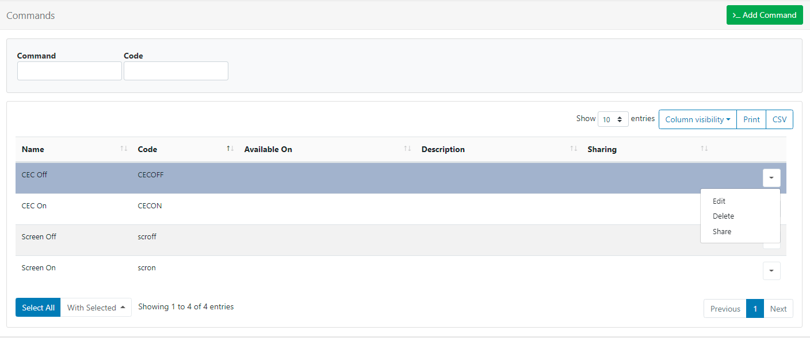

Command Functionality
The Command Functionality in BI Square Brand Activation is used to configure a set of Commands for a User to select to execute via XMR, in a Schedule or include in a Layout.
Commands can have Command Strings to apply to all Players or have a different Command String per Player which is particularly useful if your network is mixed / connected to different Displays or have slightly different Player hardware.
A Command record is created which allows for a “generic command” to be created which can be used across Display Profiles, Scheduled Events and the Shell Command Widget.
Commands provide easy access to functionality for RS232, Android Intents and Philips SoC (system on chip)!
Command Management
Commands are created and managed from Commands under the Displays section of the main CMS menu:

Use the row menu for a Command to Edit, Delete and set Share options.
Add Command
Click on the Add Command button and complete the relevant form fields:

Use the Command drop down menu to select from one of the following options to configure:
Free Text
Type in a Command String
The Command String represents the final executed Command and can be a direct call to the shell or can have a helper specified, see “Helpers” section below.
Philips Android
The following commands can be used to control LED’s located on the sides of some commercial Phillips Displays:
tpv_led|off
tpv_led|red
tpv_led|green
tpv_led|blue
tpv_led|white
From Android v2 R215, integration has been added to power on/off the screen backlight by using the following commands:
tpv|backlighton
tpv|backlightoff
The below commands can be used for one specific Android 4 model only; 2016 model 10BDL3051T
tpv|screenoff tpv|screenon
screenoffwill turn the screen off and put in a lower power state which can then be turned back on withscreenon.For all other models, please use
backlighton/offasscreenoffwill power completely off resulting in the need for an on site restart!
Mute/unmute commands have also been added from v2 R215:
tpv|mute
tpv|unmute
Please note: backlighton/off doesn’t mute audio, so if you have audio playing you will will also want to schedule the above mute/unmute commands at the same time.
RS232
RS232 commands can be executed on Players by using the rs232 prefix in the Command String. The format of the command is rs232|<connection string>|<command>.
The connection string should be provided in the following format on Windows:
<COM#>,<Baud Rate>,<Data Bits>,<Parity|None,Odd,Even,Mark,Space>,<StopBits|None,One,Two,OnePointFive>,<Handshake|None,XOnXOff,RequestToSend,RequestToSendXOnXOff>,<HexSupport|0,1,default 0>
Please note: If you need to send your Command in HEX format, you should specify the byte string in the Command String, for example: 7E 00 00 FF 00 00 00 00 00 00 00 00 00 00 00 00 00 FF , this will be converted to a byte stream by the player. You will need to set the HexSupport element of the connection string to 1.
The connection string should be provided in the following format on Android:
<DeviceName>,<Baud Rate>,<Data Bits>,<Parity>,<StopBits>,<FlowControl>
Each setting is represented by a corresponding number:
DATA_BITS_5 = 5;
DATA_BITS_6 = 6;
DATA_BITS_7 = 7;
DATA_BITS_8 = 8;
PARITY_NONE = 0;
PARITY_ODD = 1;
PARITY_EVEN = 2;
PARITY_MARK = 3;
PARITY_SPACE = 4;
STOP_BITS_1 = 1;
STOP_BITS_15 = 3;
STOP_BITS_2 = 2;
FLOW_CONTROL_OFF = 0;
FLOW_CONTROL_RTS_CTS = 1;
FLOW_CONTROL_DSR_DTR = 2;
FLOW_CONTROL_XON_XOFF = 3;
The Command itself is a string which gets sent over RS232 using the connection details.
Android Intent
Android Display Profiles can use the intent helper to specify an intent that should be called when the Command executes. The format of the Command is intent|<type|activity,service,broadcast>|<activity>|[<extras>] .
[<extras>] is an optional parameter available from Android v2 R206 used to provide additional data to the Intent. This must be a JSON formatted string containing an array with at least one object. The object format is below and must be on one line.
{
"name": "<extra name>",
"type": "<type|string,int,bool,intArray>",
"value": <the value of the above type>
}
For example, on some devices you can program the firmware to set on/off times.
[{
"name": "timeon",
"type": "intArray",
"value": [2018, 7, 28, 8, 40]
}, {
"name": "timeoff",
"type": "intArray",
"value": [2018, 7, 28, 21, 40]
}]
This would be set on the command as:
intent|broadcast|activity|[{ "name": "timeon", "type": "intArray", "value": [2018, 7, 28, 8, 40] }, { "name": "timeoff", "type": "intArray", "value": [2018, 7, 28, 21, 40] }]
Commands containing an intent helper are ignored in the Windows Player!
Helpers
Command Helpers are prefixes that can be added to the Command String in order to take a more advanced action. Commands without a prefix are executed in the shell of the operating system which runs the Player. cmd.exe on Windows and shell on Android.
Validation
The Validation String is used as a comparison to the Command output and if it matches then the Command is considered a success. The Validation String must be an exact match.
This could be useful for a network of mixed Windows and Android Players with a command called ‘Reboot’. The Command String for ‘Reboot’ on Windows being shutdown /r /t 0, and on Android, it is reboot.
The same can also be useful with a non-mixed network - imagine a network of Windows players with different monitors connected over HDMI/RS232. A single Command called ‘Monitor On’ can be created with the different brands of monitor represented by different Display Settings Profiles, each can have a different Command String to turn the monitor on/off.
Available on
Select which type of Display the Command will be available on, leave blank to apply the Command to all types of Display.
Command and Validation strings can be overridden by editing a Display Profile and using the Command tab!
Send Command XMR
Execute Commands via XMR from Displays/Display Groups using the row menu:
Scheduling Commands
Schedule Commands so that they are executed at a specific time
-
Click on Schedule from the main CMS menu.
-
Select Add Event from the top of the Schedule grid.
-
From the Event Type drop down select Command.
-
Complete the form fields and select the Command to use and Start Time.
Scheduled commands are executed once on the Player and only require a Start date and time. The Command can be executed up to 10 seconds after the time selected.
Shell Commands
Use the Shell Command Widget to run external Commands based on the Layouts activity.
Shell Commands with a Command as their source act in the same fashion as normal shell commands. The Command is executed when the Widget is shown on the Layout.
A Shell Command can also be a Command String with options for all Players provided. This allows Users to add Commands ‘ad-hoc’ for one-time use.
We recommend that Administrators create predefined commands when possible!
Monitor ON/OFF
HDMI-CEC
HDMI-CEC is a bus that is implemented on nearly all new large-screen TVs that have HDMI connectors. This bus (which is physically connected within normal HDMI cables) supports control signals that can perform power-on, power off, volume adjusts, selection of video source and many of the features that are accessible via the TV’s remote control. It can also control most other hardware on the HDMI bus.
BI Square Brand Activation doesn’t provide a direct interface to HDMI-CEC as there are many different manufacturer specifications, however, it is possible to control HDMI-CEC via a batch file.
Serial/RS232
Industry grade monitors often have a serial interface for turning the monitor panel on and off. BI Square Brand Activation can use the RS232 Command helper to send these Commands to the monitor - usually in HEX mode.
The following monitors and Commands have been tested:
NEC E464
- Power On -
rs232|COM1,9600,8,None,One,None,1|01 30 41 30 41 30 43 02 43 32 30 33 44 36 30 30 30 31 03 73 0d - Power Off -
rs232|COM1,9600,8,None,One,None,1|01 30 41 30 41 30 43 02 43 32 30 33 44 36 30 30 30 34 03 76 0d
Sharp LC-42D69U
- Power On -
rs232|COM1,9600,8,None,One,None,1|50 4F 57 52 31 20 20 20 0D - Power Off -
rs232|COM1,9600,8,None,One,None,1|50 4F 57 52 00 20 20 20 0D
LG 55LK520
- Power On -
rs232|COM1,9600,8,None,One,None,1|6B 61 20 30 30 20 30 31 0D - Power Off -
rs232|COM1,9600,8,None,One,None,1|6B 61 20 30 30 20 30 30 0D
It should be noted that other models of each brand should also use the same Commands.